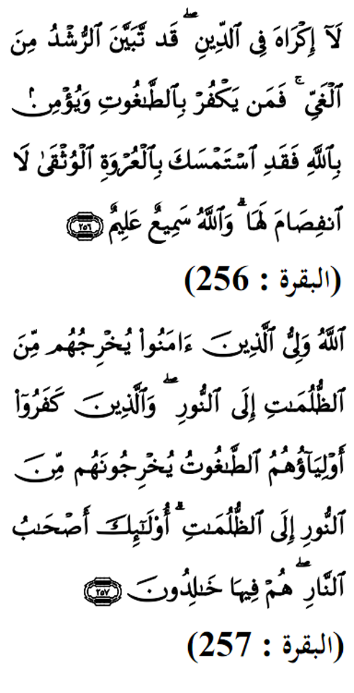

|

Terjemahan (256)Tiada paksaan dalam agama (Islam), kerana telah nyata kebenaran (Islam) daripada kesesatan (kufur). Oleh itu orang yang tidak mempercayaai taghut dan beriman kepada Allah, dia berpegang kepada simpulan (ajaran agama) yang teguh serta tidak akan putus. Dan ingatlah, Allah Maha mendengar, lagi Maha mengetahui. (257)Allah Pelindung(Yang mengawal dan menolong) orang beriman. Ia mengeluarkan mereka daripada kegelapan (Kufur) kepada cahaya(Iman). Dan orang kafir, penolong-penolong mereka ialah taghut yang mengeluarkan mereka daripada cahaya (Iman)kepada kegelapan (Kufur). Mereka itulah ahli neraka. Mereka Kekal di dalamnya. |